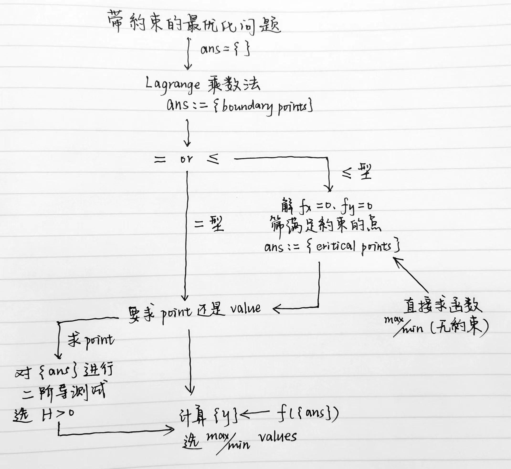
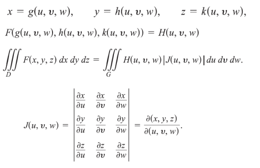
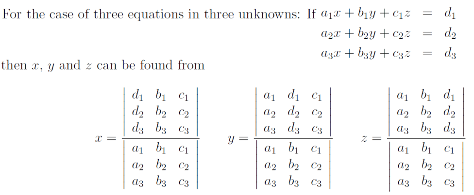
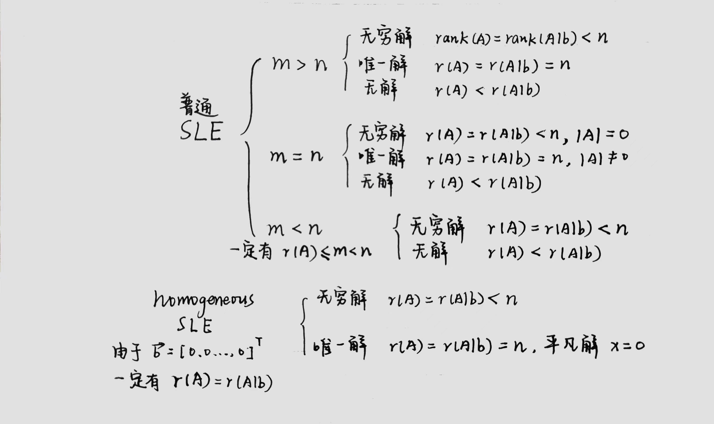

Multivariable Calculus & Linear Algebra
有点出于功利的目的选了这门数学。由于提供回放，从开学到现在还没有 physically attend 过 lecture，感觉有点对不起老师。决定从写这篇笔记开始，以后所有的课都一定要 attend！
This article is a self-administered course note.
It will NOT cover any exam or assignment related content.
从单变量到多变量
我的大脑已经被单元微积分预训练的较为充分，关于多元微积分的基础内容只要微调一下就行了。此为迁移学习之道。
多元函数的连续性 (continuity)。
- 证明二元函数 \(f(x,y)\) 在 \((x_0,y_0)\) 处连续的充要条件是 \(\lim_{(x,y)\to (x_o,y_o)}f(x,y)=f(x_0,y_0)\)。常用的化简方式：极坐标表示 (\(\alpha\) 表示逼近的方向)。
- 证明二元函数 \(f(x,y)\) 在 \((x_0,y_0)\) 的极限不存在：构造两个不同趋近 \((x_0,y_0)\) 的方向，在这两个方向上得出的极限值不同。构造的方向能够化简函数为佳：从 \(x=0\) 逼近，\(y=0\) 逼近，\(y=x\) 逼近等。
多元函数的偏导数 (partial derivatives)。
- \(C^k\) 函数。例：\(C^2\) 函数 \(f(x,y)\) 有 \(f_{xy}=\frac{\partial^2 f}{\partial y \partial x}\)，\(f_{yx}=\frac{\partial^2 f}{\partial x \partial y}\)，满足 \(f_{xy}=f_{yx}\)。
- 链式法则 (chain rule of differentiation)。
对于多元复合函数 \(w=f(g_1(t_1,...,t_k),...,g_n(t_1,...,t_k))\)，其对某个变量 \(t_i\) 求偏导
\[ \frac{\partial w}{\partial t_i}=\sum_{j=1}^n \frac{\partial w}{\partial g_j}\times\frac{\partial g_j}{\partial t_i} \] 题目：tutorial exercise 1.3.3。question bank q1, q2。
全微分
全微分 (total differentiation) 是线性近似 (linear approximation)。
对函数 \(w=f(x,y)\)，若知道其在 \((x_0,y_0)\) 处的值，可利用 \(f(x_0,y_0)\) 对 \(f(x,y)\) 做近似。即，对于 \(x=x_0+\Delta x\) 与 \(y=y_0+\Delta y\)，求 \(\Delta w\) 满足 \(f(x,y)=f(x_0,y_0)+\Delta w\)。有： \[ \Delta w=f_x(x_0,y_0)\Delta x+f_y(x_0,y_0)\Delta y+o(\sqrt{\Delta x^2+\Delta y^2}) \] 当 \(\Delta x\to 0, \Delta y \to 0\) 时，\(\Delta x\) 与 \(\Delta y\) 可被 \(dx,dy\) 表示，\(\Delta w\) 也可被 \(dw\) 近似 (忽略了小量 \(o(\sqrt{\Delta x^2+\Delta y^2})\))。 \[ \Delta w \approx dw=f_x(x_0,y_0)dx+f_y(x_0,y_0)dy \] 用该方法近似得出的 \(\Delta w\) 被称为 \(w\) 在 \((x_0,y_0)\) 的全微分 (total differential)，或线性近似 (linear approximation)。
题目：quesion bank q20 (误差问题求 maximum of \(\Delta S\): 用绝对值 \(|\Delta S|=|f_x||\Delta_x|+|f_y| |\Delta_y|\))
泰勒公式
全微分是函数在某点的线性近似。使用泰勒公式能够进一步提高近似的准确度。
回忆单变量二阶泰勒公式的表述： \[ \Delta g = g(t)-g(t_0)=g'(t_0)(t-t_0)+\frac{g''(t_0)}{2!}(t-t_0)^2+\frac{1}{2!}\int_{t_0}^t(t-\tau)^2g'''(\tau)d\tau \] 迁移到二元函数的近似 (忽略了小量，如果要表示出来可以直接写 \(\text{Remainder}\) 或 \(R\))： \[ \begin{aligned} \Delta w&=f(x,y)-f(x_0,y_0)\\&\approx[f_x(x_0,y_0)\Delta x+f_y(x_0,y_0)\Delta y]+\frac{1}{2!}[f_{xx}(x_0,y_0)\Delta x^2+2f_{xy}(x_0,y_0)\Delta x\Delta y+f_{yy}(x_0,y_0)\Delta y^2] \end{aligned} \] 可以发现，使用一阶泰勒公式对 \(\Delta w\) 进行扩展，得到的即为全微分；\(\Delta x\) 与 \(\Delta y\) 的指数均为 1，这就是线性近似中线性的含义。
多元函数的最值
临界点 (critical point) \((x_0,y_0)\) 指的是满足 \(f_x(x_0,y_0)=0\) 且 \(f_y(x_0,y_0)=0\) 的点。可证最值 (relative extreme values) 一定出现在临界点上，但不是所有的临界点都是最值点。
对于求出的所有临界点，我们使用二阶导测试 (second-order derivative test) 来决定其性质。
Let \((x_0,y_0)\) be a critical point of \(f(x,y)\) and suppose that \(A=f_{xx}(x_0,y_0)\), \(B=f_{xy}(x_0,y_0)\), \(C=f_{yy}(x_0,y_0)\) and \(H=AC-B^2\).
- If \(H>0\) and \(A<0\), then \(f(x_0,y_0)\) is a relative maximum.
- If \(H>0\) and \(A>0\), then \(f(x_0,y_0)\) is a relative minimum.
- If \(H<0\), then \(f(x_0,y_0)\) is a saddle point.
- If \(H=0\), then the second-order derivative test is inconclusive.
提供一个 intuition，\(H\) 可看作是某个二次函数的判别式的相反数，该二次函数表示的是 \(f\) 在 \((x_0,y_0)\) 向任意方向的导数。\(H>0,A>0\) 说明从 \((x_0,y_0)\) 向任意方向的导数都为正，\((x_0,y_0)\) 一定是一个极小值。再来一个例子，\(H<0\) 说明从 \((x_0,y_0)\) 向各个方向的导数有正有负，\((x_0,y_0)\) 一定是一个鞍点 (saddle point)。
具体推导见 \(AC-B^2\) 这个判别式是怎么来的？ — 知乎。
拉格朗日乘数法
拉格朗日乘数法 (Lagrange multiplier method) 求解带约束的最优化问题 (constrained optimization problems)。即，对于函数 \(f(x,y)\)，给出约束 \(g(x,y)=a\)，求 \(f\) 的最小/最大值。
想象一个 contour 图，\(g\) 是固定的，\(f\) 是可变的；满足约束的 \(f\) 的极值点一定是 \(f\) 与 \(g\) 的切点 \((x_0,y_0)\)。那么有： \[ \nabla f(x_0,y_0)=\lambda \nabla g(x_0,y_0) \] 其中 \(\nabla\) 表示的是函数在某点的梯度 (gradients)，\(\lambda\) 被称为 Lagrange multiplier。把梯度展开，再加上 \(g(x,y)=a\) 这个条件，对于 \(n\) 元函数我们总能列出 \(n+1\) 个方程： \[ f_x=\lambda g_x, f_y=\lambda g_y,g=a \] 再将这些方程合并：定义 Langragian 函数 \(L(f,g,\lambda)=f-\lambda(g-a)\)， 那么最小/大值点一定满足 \(L_x=0\), \(L_y=0\) 与 \(L_\lambda=0\)。
注意，拉格朗日乘数法只能求解限制 \(g(x,y)=a\) 为等式的情况。对于不等式 \(g(x,y)\leq a\)：
- \(g(x,y)<a\). 内部，求出定义域内的 critical points，筛选 \(g(x,y)<a\) 的那部分。
- \(g(x,y)=a\). 边界，用 Lagrange multiplier/代入原函数后化简求解。
在上面求出的所有点中选一个最大值，一个最小值。可以发现这个思路也是按照单变量函数来的：我们求单变量函数在限制 \(a\leq x\leq b\) 下的最大/最小值，先求临界点并筛选 \(a < x < b\) 的部分，再求边界上的 \(f(a)\) 与 \(f(b)\)，从中取一个最大/小值。二元函数的唯一区别是它的边界位于平面/更高的位面上，这种情况下可能需要使用 Lagrange multiplier。
多约束问题中的 Lagrange multiplier：\(g_1(x,y,z)=a, g_2(x,y,z)=b\)。 \[ L(x,y,z,\lambda_1,\lambda_2)=f-\lambda_1(g_1-a)-\lambda_2(g_2-b) \] 这是 chapter 1 中最常见的一类题目，在这里总结一下方法。

题目：question bank q18 (算错了)，q19 (看似是 \(\leq\) 限制，实则是 \(=\) 限制)，q22-24 均为比较复杂的计算和讨论，q25 (椭圆的 \(a,b\) 轴是最大/最小距离)。
数值方法
找某个函数的零点。这里介绍的均是数值方法 (numerical methods)，采取不断近似-逼近的方式得到答案。
求单变量函数 \(f(x)\) 的零点：Newton-Raphson Method。选取某个起始点 (initial point) \((x_0,f(x_0))\)，不断执行以下步骤逼近零点： \[ f'(x_n)=\frac{f(x_n)}{x_n-x_{n+1}}\Rightarrow x_{n+1}=x_n-\frac{f(x_n)}{f'(x_n)} \] 将 Newton-Raphson Method 扩展到解非线性方程组。对于非线性方程组： \[ \begin{cases} f(x,y)=0 \\ g(x,y)=0 \end{cases} \] 给出初始点 \((x_0,y_0)\)，我们的目标是逼近该方程组的解 \((a,b)\)。使用二阶泰勒公式转化一下： \[ \begin{cases} 0=f(a,b)=f(x_0+h,y_0+k)=f(x_0,y_0)+f_x(x_0,y_0)h+f_y(x_0,y_0)k+R \\ 0=g(a,b)=g(x_0+h, y_0+k)=g(x_0,y_0)+g_x(x_0,y_0)h+g_y(x_0,y_0)k+R \end{cases} \] 把 \(R\) 忽略 (我们要的是逐渐逼近的近似) 再整理一下得到了线性方程组： \[ \begin{cases} f(x_0,y_0)+f_x(x_0,y_0)h+f_y(x_0,y_0)k=0 \\ g(x_0,y_0)+g_x(x_0,y_0)h+g_y(x_0,y_0)k=0 \end{cases} \] 线性方程组当然能随意蹂躏了。解得 \(h,k\) 后更新 \(x_1:=x_0+h, y_1:=y_0+k\)。重复该过程逐渐逼近真零点 \((a,b)\)。
题目：question bank p6 (千万记得不要高反 \(h,k\) 的顺序，\(h\) 对应 \(x\)，\(k\) 对应 \(y\))
多元积分求体积
多元积分 (Multiple Integrals) 求体积主要涉及的是二元 (double integral) 与三元积分 (triple integral)。
根据 Fubini's Theorem，在矩形区域 (rectangular region) \(R:a\leq x\leq b, c\leq y\leq d\) 上连续的函数 \(f(x,y)\)，有： \[ \iint\limits_{R} f(x,y)dA=\int_c^d \int_a^b f(x,y)dxdy=\int_{a}^b\int_{c}^d f(x,y)dydx \] 若 \(y\) 的范围与 \(x\) 有关，即 \(f(x)\leq y\leq g(x)\)，\(dx\) 在外 \(dy\) 在内 (计算底面时使用与 \(y\) 轴平行的扫描线)。若 \(x\) 范围与 \(y\) 有关则 \(dy\) 在外 \(dx\) 在内 (计算底面时使用与 \(x\) 轴平行的扫描线)。
- 使用二元积分计算闭合的面积时使用 \(A=\iint_R dA\)，即令 \(f(x,y)=1\)。
- 计算 \(f\) 在 \(R\) 上的平均值 (average value) \((1/\text{area of } R)\iint_R fdA\)。
二元积分中的换元法 (Change of Variables in Double Integral)。先介绍一下 the Jacobian of variables \(u,v\) with respect to \(x,y\)，即二元函数对二元函数求导。对于 \(u=u(x,y),v=v(x,y)\)， \[ J=\frac{\partial(u,v)}{\partial(x,y)}=\frac{\partial u}{\partial x}\frac{\partial v}{\partial y}-\frac{\partial u}{\partial y}\frac{\partial v}{\partial x}=det|\begin{matrix}\frac{\partial u}{\partial x}& \frac{\partial v}{\partial x} \\ \frac{\partial u}{\partial y} & \frac{\partial v}{\partial y} \end{matrix}| \] 那么换元就很简单了。注意在 \(xy-\)space 上的 \(S\) 区域对应到 \(uv-\)space 上的 \(S_1\) 区域。 \[ \iint \limits_{S} f(x,y)dxdy=\iint \limits_{S'} f(u,v) |\frac{1}{J}|dudv \] 这类题目的解法 (好题 Chapter2 pp.35, 38)：对于 bounded by curves \(C_1,C_2,C_3\) 的 \(R\)：
- 观察 \(C_1,C_2,C_3\)，找到换元策略 (用 \(u,v\) 重写 \(C_1,C_2,C_3\))
- 计算 Jacobian 的倒数 \(|1/J|\)
- 用 \(f(u,v)dudv\) 重写 \(f(x,y)dxdy\)，将 \(S\) 重写为 \(S'\) (换元带来的范围变化)
极坐标下的多元积分。Jacobian \(r\) 的本质是将极坐标变量之积 \(drd\theta\) 投射到 \(xy\) 坐标系上的单位面积 \(dxdy=rdrd\theta\)。 \[ \iint _R f(x,y)dxdy=\iint_R f(r\cos \theta, r\sin \theta)rdrd\theta \] 当底面是圆/椭圆等图形时，通常使用极坐标系求积分。
- 画出草图 (对较复杂的曲线，先得到 \(\theta-r\) table，再进行连线)
- 使用从原点出发向外发射的扫描线，对上下边界积分，\(dr\) 在内 [\(r\)-limits of integration]
- 对扫描线扫过的角度积分，\(d\theta\) 在外 [\(\theta\)-limits of integration]
三元积分 triple integrals。一样的套路：注意 \(dx,dy,dz\) 的 order，一定是外层变量决定里层。 \[ \iiint \limits_{D} F(x,y,z)dV=\int_{x=a}^{x=b}\int_{y=g_1(x)}^{y=g_2(x)}\int_{z=f_1(x,y)}^{z=f_2(x,y)}F(x,y,z)dzdydx \]
- 使用三元积分计算体积时使用 \(V=\iiint_D dV\)，即令 \(F(x,y,z)=1\)。
- \(f\) 在空间 \(D\) 上的平均值 \((1/\text{volume of }D)\iiint_D fdV\)。
小 trick：不共线的三点构成一个平面：解方程 \(ax+by+cz=d\)。
- 假设 \(a\neq 0\)，代入三个点解 \(x+by+cz=d\)
- 上一步出现矛盾说明 \(a=0\)，解 \(by+cz=d\)
题目：Chapter 2 pp.58, pp.59。
更多的三元积分
计算三维固体 (three-dimensional solid) 的质点 (center of mass, aka centroid)。定义 \(\delta(x,y,z)\) 为在 \((x,y,z)\) 处的密度 (density)，质点 \((\overline{x}, \overline{y}, \overline{z})\) 位于： \[ \begin{aligned} \text{Mass: }&M=\iiint_D \delta dV \\ \text{Centroid: }&\overline{x}=\frac{\iiint_D x\delta dV}{M}, \overline{y}=\frac{\iiint_D y\delta dV}{M},\overline{z}=\frac{\iiint_D z\delta dV}{M} \end{aligned} \] 题目：Chapter 2 pp.63, pp.64 example 24 (计算 two-dimensional plate 的质点。注意 first moments \(M_x,M_y\) 的定义)。一个英文理解锅：\(x\) is bounded above \(y\), below \(z\) 是指 \(y\) 为上边界，\(z\) 为下边界。
三元积分的换元 (Change of Variables in Triple Integrals)。相应的 Jacobian 矩阵也是三阶的，回忆三阶矩阵行列式的计算方法：三条 ↘ 之和减去三条 ↙ 之和。

三元积分的两种常见换元法：圆柱形坐标 (Cylindrical Coordinates) 与球形坐标 (Spherical Coordinates)。
Cylindrical Coordinates。点 \(P\) 被 \((r, \theta,z)\) 表示，其中：
- \(r,\theta\) 是 \(P\) 在 \(xy\) 平面上垂直投影的极坐标。\(x=r\cos \theta,y=r\sin \theta\)。
- \(z\) 为矩形坐标系的 \(z\) 坐标本身。\(z=z\)。
- Jacobian 化简后为 \(r\) (和二元积分的 Polar Coordinates 一致)。
- 积分顺序由内而外一般为 \(dzdrd\theta\)。
Spherical Coordinates。点 \(P\) 被 \((\rho,\phi,\theta)\) 表示，其中 (配合 Chapter 2 pp.73 食用更佳)：
- \(\rho\) 为 \(P\) 到原点的距离。\(\rho=\sqrt{x^2+y^2+z^2}=\sqrt{r^2+z^2}\)。
- \(\phi\) 为 \(\mathbf{OP}\) 与正向 \(z\) 坐标轴的夹角，因此 \(0\leq \phi \leq \pi\)。
- \(\theta\) 为 \(P\) 在 \(xy\) 平面上垂直投影的极坐标。\(r\) 此时被 \(\rho\sin\phi\) 替代。
- Jacobian 化简后为 \(\rho^2 \sin \phi\) (记住！)。
- 积分顺序由内而外一般为 \(d\rho d\phi d\theta\)。
题目：Chapter 2 pp.72 example 26 (cylindrical), pp.78 example 27 (求 cone 常用 spherical)。
一些 jibber-jabber
更适合 CS 学生体质的多元积分理解方式。
求 \((x,y,z)=(a,b,c)\) 的立方体体积。
\(\iiint\)
本质上是在三个方向上累积该坐标系下的单位体积 (小量)。假设
for 是 continuous 的而非 discrete 的，那么：
1 | unit_vol = dx * dy * dz |
如果 \((x,y,z)\) 的值域并非固定，而是存在一定的依赖关系，例如 \(y\) 的值满足关于 \(x\) 的函数 \(y=f(x)\)，\(z\) 的值满足关于 \(x,y\) 的函数 \(z=g(x,y)\)，又怎么样呢？
1 | unit_vol = dx * dy * dz |
换元又如何？其实换元本质上只是对坐标系的改变。坐标系的改变会导致两个变化：变量值域的变化，单位小量的变化。前者可以直接由换元关系计算得出，后者则反映在 Jacobian \(J\) 上。
Jacobian \(J=\det(\partial(u,v,w)/\partial(x,y,z))\)。新的单位小量
\(dudvdw\) 是原单位小量 \(dxdydz\) 的 \(|J|\) 倍，这表示换元后 for
循环的每一次累积都被 scale up 了 \(|J|\) 倍。那么：
1 | unit_vol = du * dv * dw |
题目：Tutorial Ex. 4.1 [关于 Eclipse 的换元 \(x=ar\cos \theta,y=br\sin \theta\)], 4.3 [\(r=1+\cos \theta\) 或 \(r=1+\sin \theta\) 的图像画法], Ex. 5.1, 5.3 [积分的方向要看准，结合图像].
线性方程组与矩阵
来到第 2 Part 了。前期的概念还是比较熟悉的，稍微过一过：
- SLE (System of Linear Equation)。线性方程组。
- Equation Operations。对应矩阵的初等行变换 (Row operation) \(R_i\leftrightarrow R_j, \alpha R_i, \alpha r_i+R_j\)。
- Coefficient Matrix, Vector of Constants and Solution Vector。参数矩阵，常数向量与解向量。
- 参数矩阵与常数向量拼在一起得到熟悉的 Augmented Matrix (增广矩阵)。
矩阵通过 row reduction 得到它的 echelon form (aka row echelon form, 行阶梯型矩阵)。
- 全 0 行位于矩阵的底部。
- 第 \(i\) 行的 pivot 位于第 \(j\) \((i<j)\) 行的 pivot 的左侧。
- 位于 pivot 同列下方的元素全为 0。
进一步 row reduction 得到 the reduced echelon form (aka reduced row echelon form, 行简化阶梯型矩阵)。
- 所有 pivot 均为 1。
- 现在，pivot 同列下方与上方的元素均为 0；即 pivot column 只有 pivot 为 1，其他都是 0。
一个非 0 矩阵可能对应多个 echelon form；但是 reduced echelon form 是唯一的，它明确描述了线性系统的解集。先定义一些概念。
- consistent - 线性系统有解 (唯一或无穷)，inconsistent - 线性系统无解。
- base varaible - pivot column 所对应的变量，free variable - 剩余的变量。
Gauss Jordan methoe 解 SLE。
- 将 SLE 写成增广矩阵形式。
- 把矩阵变换为行简化阶梯型。
- 如果存在 \(0=b\) 的行，该 SLE 无解 (inconsistent)。
- 其他，如果存在自由变量，有无穷解 (用自由变量表示基变量)；反之有唯一解。
homogeneous SLE - \(\mathbf{b}=\mathbf{0}\) 的 SLE。可以保证 homogeneous SLE 是 consistent 的， 因为至少存在 \(\mathbf{x}=\mathbf{0}\) 的平凡解 (trivial solution)。
主对角线 (main diagnal) \(a_{ii}\)。对角矩阵 (diagnal matrix) 非零元素都在主对角线上 (对角矩阵可以是 \(n\times m\) 的)。单位矩阵 \(I_n\) 是 \(n\times n\) 的对角矩阵，且主对角线上所有元素均为 \(1\)。
关于矩阵乘法 (matrix multiplication)。
- 如果 \(AB=BA\)，我们说 \(A,B\) commute with each other. (一般来说 \(AB\neq BA\))。
- Cancellation Law (消去律) 不成立。即 \(AB=AC\) 不一定意味着 \(B=C\)。
- \(AB=0\) 不一定意味着 \(A=0\) 或 \(B=0\)。
矩阵的转置 (transpose)。一个重要规则 \((AB)^T=B^TA^T\)。
向量
基础的东西没什么好说的。
对于一组向量 \(v_1,...,v_p\)，线性组合 (linear combination) 指 \(c_1v_1+c_2v_2+...+c_pv_p\)。这组向量生成的所有线性组合的集合 \(\text{Span}\{v_1,...,v_p\}\) 被称为 the subset of \(R^n\) spanned (generated) by \(v_1,...,v_p\)。
关于线性独立 (linear independence)。对于一组向量 \(\{v_1,...,v_p\}\)，如果： \[ \begin{aligned} x_1v_1+x_2v_2+...+x_pv_p&=0 \\ \\ i.e. \ \begin{bmatrix}|&|&...&|\\ \mathbf{v_1}&\mathbf{v_2}&...&\mathbf{v_p}\\|&|&...&|\end{bmatrix}& \begin{bmatrix} x_1\\x_2\\...\\x_p\end{bmatrix}=\mathbf{0} \end{aligned} \]
- 有唯一解 (即唯一的平凡解 \(\mathbf{x}=\mathbf{0}\))，这组向量是 linearly independent 的。
- 有无穷解，这组向量是 linearly dependent 的。
把线性组合写成矩阵形式，我们就把判断向量组 linear independence 的问题转化为了判断 homogeneous SLE 是否 consistent 的问题。
几个小结论。
- 向量集合 \(\{\mathbf{v}_1, \mathbf{v}_2,...,\mathbf{v}_p\}\)，其中 \(\mathbf{v}\in R^n\)，如果 \(p>n\)，一定有 linear dependent。
- 任何包含 \(\mathbf{0}\) 的向量集合是 linear dependent 的。
矩阵的行列式
子矩阵 (submatrix)。\(A\in R^{m\times n}\)，子矩阵 \(A(i|j)\in R^{(m-1)\times (n-1)}\) 是指\(A\) 抽掉第 \(i\) 行第 \(j\) 列形成的。
方阵 (square matrix) 的行列式 (determinant)。对 \(A\in R^{n\times n}\)，\(\text{det}(A)=|A|\) 采用回溯定义： \[ \text{det}(A)=[A]_{11}\text{det}(A(1|1))-[A]_{12}\text{det}(A(1|2))+{...}+(-1)^{n+1}[A]_{1n}\text{det}(A(1|n)) \] 这是行列式在第一行展开 (expansion about row \(1\)) 的公式。实际上求行列式可以在任意行/列展开。
求行列式是线代的基本题型了。一些用得到的性质：
- \(\text{det}(A)=\text{det}(A^{T})\)。
- \(\text{det}(AB)=\text{det}(A)\text{det}(B)\)。
- 对 \(A\) 应用初等变换得到 \(A'\)。三种初等变换 (Elementary Matrix
Operations)
- EMO \(i\) - 交换矩阵的两行。\(\text{det}(A')=-\text{det}(A)\)。
- EMO \(ii\) - 选择某一行乘上常数 \(c\)。\(\text{det}(A')=c\cdot \text{det}(A)\)。
- EMO \(iii\) - 把行 \(i\) 的 \(c\) 倍加到行 \(j\) 上。\(\text{det}(A')=\text{det}(A)\)。
- 阶梯型矩阵的行列式：主对角线元素之积。
- 以上结论得出的推论。
- 交换两列 - \(\text{det}(A')=\text{det}(A)\)。
- 存在相同行/全零行的矩阵 - \(\text{det}(A)=0\)。
奇异矩阵 (Singular Matrix)。我们说方阵 \(A\) 是奇异矩阵当 \(\text{det}(A)=0\)。这代表以 \(A\) 定义的 homogeneous SLE 有无数组解。相反的，非奇异矩阵定义的 homogenous SLE 仅有唯一平凡解。
一系列重要结论。一个小总结：行列式可以说串起了线代里的一系列重要结论，这和它的几何意义 —— 描述线性变换前后空间体积的伸缩率 —— 是息息相关的。对于某个 \(n\times n\) 的方阵 \(A\)：
| 意义/行列式 | \(|\text{det}(A)|=0\) | \(|\text{det}(A)|> 0\) |
|---|---|---|
| 几何意义 | 维数降低 | 维数不变 |
| Singularity | Singular Matrix | Non-Singular Matrix |
| Null Space | 由于降维，零空间有无数个向量被压缩至原点 | 零空间仅包含零向量 |
| Homogeneous SLE | 有无数组解 | 有唯一平凡解 |
| SLE | 有无数组解 | 有唯一解 |
| 简化行阶梯型矩阵 | 存在自由变量 | 行简化至 Identity Matrix \(I\) |
| 秩 | \(\text{rank}(A)<n\)，不满秩 | \(\text{rank}(A)=n\)，满秩 |
| 列向量 | 线性相关，其最大独立组的大小定义为秩 | 线性无关 |
| Invertibility | 被降维损失信息，矩阵不可逆 | 存在 \(A^{-1}\) |
利用行列式与矩阵的逆，我们得到了求解 Linear System 的新方法。
方法一 (求矩阵的逆)。如果 \(A\) 是非奇异矩阵，那么对于 Linear System \(A\mathbf{x}=\mathbf{b}\)，有唯一解 \(\mathbf{x}=A^{-1}\mathbf{b}\)。矩阵逆的求法 - 高斯约旦消元法 (Gauss-Jordan Elimination)：把矩阵 \(A\) 增广为 \([A|I]\) (或 \([I|A]\))，执行一系列 EMO 把 \(A\) 变换为 \(I\)，此时有 \([I|A^{-1}]\)。
方法二 (Cramer's Rule)。使用行列式求解。以 \(n=3\) 为例：

内积与叉积
内积/点积 (inner product/dot product) \(\mathbf{a}\cdot \mathbf{b}\) 或 \(<\mathbf{a},\mathbf{b}>\)。结果为标量。
- 几何意义：\(\mathbf{a}\cdot \mathbf{b}=||\mathbf{a}||\cdot ||\mathbf{b}||\cos\theta\)。
- 使用 \(\theta\) 判断：夹角成锐角 \(\mathbf{a}\cdot\mathbf{b}>0\)，直角 \(\mathbf{a}\cdot\mathbf{b}=0\)，钝角 \(\mathbf{a}\cdot\mathbf{b}<0\)。
向量的 norm。\(||\mathbf{a}||=\sqrt{\mathbf{a}^T\mathbf{a}}\)。
叉积 (cross product) 是定义在三维空间 \(R^3\) 上的运算，\(\mathbf{a}\times \mathbf{b}\) 的结果是一个向量：
- 垂直于 \(\mathbf{a},\mathbf{b}\) 所在的平面，指向右手大拇指 (剩余四指由 \(\mathbf{a}\) 向 \(\mathbf{b}\) 弯曲) 的方向。
- \(\mathbf{a},\mathbf{b}\) 间的夹角 \(\theta \ \ (0\leq \theta \leq \pi)\)，长度为 \(||\mathbf{a}\times\mathbf{b}||=||\mathbf{a}||\cdot ||\mathbf{b}||\sin\theta\)。
叉积计算的简单记法 (convenient mnemonic)。 \[ x\times y=(x_2y_3-x_3y_2,x_3y_1-x_1y_3,x_1y_2-x_2y_1)=\text{det}\begin{pmatrix}\hat{i} & \hat{j} & \hat{k} \\ x_1 & x_2 & x_3 \\ y_1 & y_2 & y_3\end{pmatrix} \] 叉积的其他性质。
- 非 \(0\) 向量 \(\mathbf{a},\mathbf{b}\) 平行，当且仅当 \(\mathbf{a}\times\mathbf{b}=0\)。
- \(P,Q,R\) 形成的平行四边形面积 \(||\vec{PQ}\times \vec{PR}||\)。
- \(\mathbf{a}\times\mathbf{b}=-\mathbf{b}\times\mathbf{a}\)。
- \(\mathbf{a}\cdot(\mathbf{b}\times\mathbf{c})=(\mathbf{a}\times\mathbf{b})\cdot\mathbf{c}\)。
特征分解
方阵 \(A\) 的特征向量 (eigenvector) \(\mathbf{x}\) (\(\mathbf{x}\neq\mathbf{0}\)) 满足 \(Ax=\lambda x\) for some \(\lambda\)。该常数 \(\lambda\) 被称为特征向量 \(\mathbf{x}\) 对应的特征值 (eigenvalue)。
\(\lambda\) 是 \(A\) 的 eigenvalue 当且仅当方程 \((A-\lambda I)x=0\) 存在非平凡解；我们知道，这一条件等价于 homogenous SLE 存在无数组解，等价于 \(\det(A-\lambda I_n)=0\) (characteristic equation)。
三角形矩阵 (triangular matrix) 的 eigenvalues 是它主对角线上的 entries。
方阵的对角化 (diagonalization)。我们说方阵 \(A\) 是 diagonalizable 的，或者 \(A\) is similar to a diagonal matrix，当 \(A=PDP^{-1}\)，其中 \(P\) 是一个可逆阵 (invertible matrix)，\(D\) 是一个对角阵 (diagonal matrix)。
几个重要定理。
\(n\times n\) 方阵 \(A\) 是 diagonalizable 的，当且仅当 \(A\) 有 \(n\) 个 linearly independent eigenvectors。将 \(A\) 特征分解为 \(AP=PD\)，其中 \(P\) 为 eigenvectors matrix，\(D\) 为 eigenvalue matrix。
- if part 证明：diagonalizable 意味着 \(A=PDP^{-1}\)，既然 \(P\) 是 invertible 的，\(P\) 一定由 \(n\) 个 linearly independent 的向量组成。
- only if part 证明：\(AP=PD\)，既然 \(P\) 由 \(n\) 个 linearly independent 的向量组成，\(P\) 有逆 \(P^{-1}\)。所以 \(A\) 一定有 \(A=PDP^{-1}\)。
对应不同 eigenvalues 的 eigenvectors 是 linearly independent 的。
证明：induction。若该定理在 \(k\) 组 eigenvectors/eigenvalues 上成立，证明其在 \(k+1\) 亦成立。 \[ \begin{aligned} c_1x_1+c_2x_2+{...}+c_{k+1}x_{k+1}&=0 \\ \text{eq. 1 } \ c_1\lambda_1x_1+c_2\lambda_2x_2+{...}+c_{k+1}\lambda_{k+1}x_{k+1}&=0 \\ \text{eq. 2 } \ c_1 \lambda_{k+1}x_1+c_2\lambda_{k+1}x_2+{...}+c_{k+1}\lambda_{k+1}x_{k+1}&=0\\ \text{eq. 1 - eq.2} \ \sum_{i=1}^k c_i(\lambda_{k+1}-\lambda_i)x_i&=0 \end{aligned} \] 定理在 \(k\) 成立，又有 \(\lambda\) 两两不同 (\(\lambda_{k+1}-\lambda_i\neq 0\))，一定有 \(c_1=c_2={...}=c_k=0\)。代回原式得 \(c_{k+1}x_{k+1}\neq 0\)。又因为 eigenvectors 一定是非零向量，得 \(c_{k+1}=0\)。所以原方程仅有平凡解 \(c_1=c_2={...}=c_{k+1}=0\)，定理在 \(k+1\) 处成立得证。
OK 整理一下。现在我们知道 \(A\) 有 \(n\) 个线性独立的 eigenvectors 意味着它可对角化；又有对应不同 eigenvalues 的 eigenvectors 线性独立。很容易 derive 出如果对应相同 eigenvalue 的 eigenvectors 线性独立，那么 \(A\) 就是可对角化的！
这就引出了第三条定理：\(n\times n\) 方阵 \(A\) 是可对角化的，当且仅当对于 \(A\) 的所有 eigenvalues，都有 \(AM_\lambda=GM_\lambda\)。
- \(AM_\lambda\) (Algebraic Multiplicities 代数重数) - 特征值 \(\lambda\) 出现的次数。
- \(GM_\lambda\) (Geometric Multiplicities 几何重数) - 特征值 \(\lambda\) 所对应特征向量所形成的极大线性无关组的大小，或矩阵 \([A-\lambda I]\) 的零空间维数 (化成 reduced row echelon 形式后的全零行数目)。
\(AM_{\lambda}=GM_{\lambda}\)，则说明 \(\lambda\) 对应的特征向量矩阵是满秩的，因此对应 \(\lambda\) 的所有 eigenvectors 都是线性独立的。
一些 Chapter 3 的题目小总结。
- question bank q.72 (d)。构造 \((I-A)(A^{k-1}+A^{k}+{...}+A^{2}+A+I)=I-A^k=I\)。
- question bank q.84 (c). 这一类的题目一定要利用 EMO 与行列式变化的关系。
- 概念问题：若 \(v_1,v_2\in R^3\)，\(\text{span}\{v_1,v_2\}\) 并不等于 \(R^2\)，而是 \(R^3\) 中的一个二维平面。
关于 SLE 可解性的研究。\(m\) 个线性方程，\(n\) 个变量，系数矩阵 \(A\in R^{m\times n}\)，增广矩阵 \([A|b]\in R^{m\times (n+1)}\)。

Reference
This article is a self-administered course note.
References in the article are from corresponding course materials if not specified.
Course info: MATH2014, Dr. Doris ZHANG
Course textbook: Marsden Jerrold E. & Weinstein Alan, Basic Multivariable Calculus. Steven J. Leon, Linear Algebra with Application.